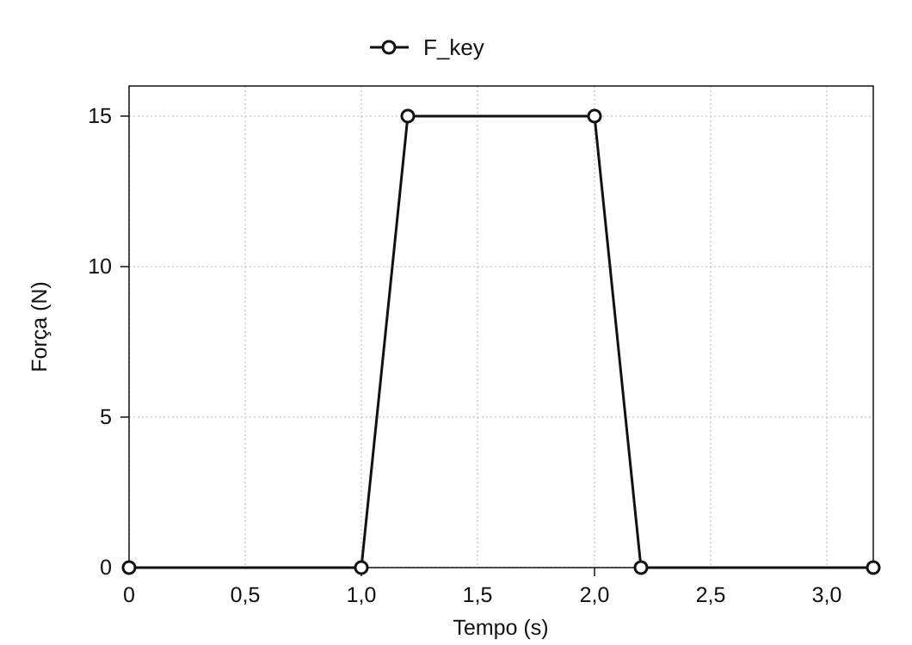
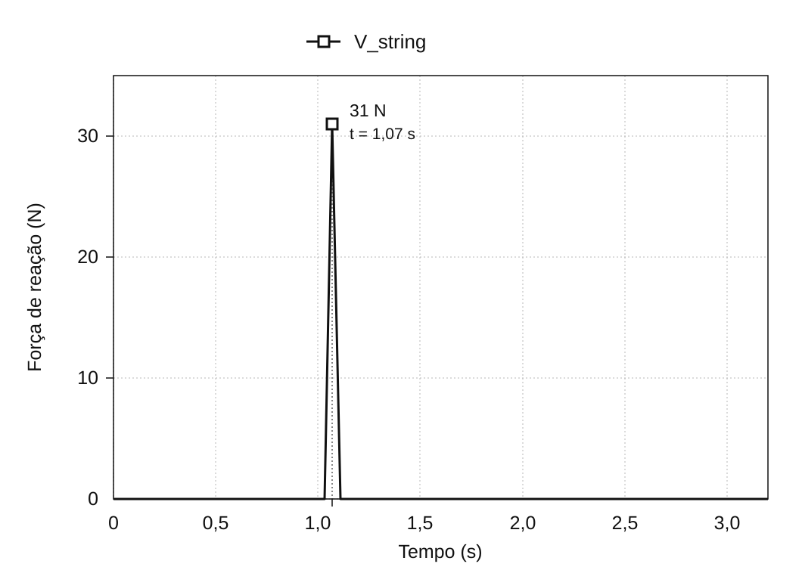

Análise do movimento do mecanismo de um piano
Janeiro de 2020
Visão geral
O mecanismo de um piano de cauda é o sistema de alavancas que transmite o movimento de uma tecla ao martelo, que sobe para golpear a corda e fazê-la vibrar. Este projeto recriou o mecanismo como um modelo 3D no SolidWorks* e usou a análise de movimento para examinar como a ação sobre a tecla se traduz na velocidade do martelo e na força de reação da corda.
O mecanismo foi modelado do zero a partir de imagens de referência e, depois, examinado em duas análises: a relação entre a velocidade descendente da tecla e a velocidade ascendente do martelo e a relação entre a força aplicada à tecla e a força de reação da corda. Os resultados da simulação foram comparados a valores teóricos calculados com as dimensões e posições dos pivôs do modelo para verificar como ele transmitia movimento e força.
* SolidWorks é um sistema CAD 3D com ferramentas de análise estrutural de peças e de análise de movimento de mecanismos.


Construindo um modelo do mecanismo de piano para análise
Como pressionar uma tecla faz o martelo golpear a corda
O mecanismo do piano converte o movimento descendente de uma tecla no movimento ascendente de um martelo. Pressionar uma tecla move conjuntamente o pilotim, o balancim, a alavanca de escape e a alavanca de repetição, erguendo o martelo para golpear a corda. O pianista faz um único movimento na tecla, mas, dentro do mecanismo, várias peças giram em torno de pivôs diferentes e transmitem movimento por contato.
O modelo 3D inclui tecla, martelo, alavanca de escape, balancim, alavanca de repetição, pilotim, abafador, alavanca do abafador e arame, além da estrutura de suporte. Para modelar o movimento, foi necessário definir o pivô de cada peça e seus pontos de contato com outras peças.
Construindo o modelo 3D a partir de um desenho em corte
Cada peça foi modelada do zero em 3D, traçando seu contorno sobre um desenho em corte do mecanismo do piano. Em seguida, as peças foram montadas, com conexões fixas e juntas de rotação correspondentes ao mecanismo físico. A definição dessas relações transformou a geometria em um modelo de análise capaz de se mover sob forças aplicadas.


Verificando os graus de liberdade da montagem
A montagem contém nove peças móveis, excluindo a estrutura fixa, somando 54 graus de liberdade sem restrições. Fixar o pilotim e o arame a outras peças remove 12 graus de liberdade. As juntas de rotação das sete peças restantes removem outros 35, deixando a montagem CAD com 7 graus de liberdade:
54 − 12 − 35 = 7
O diagnóstico de restrições do SolidWorks também indicou 7 graus de liberdade estimados e 7 reais, com 0 restrições redundantes. Isso confirmou que as peças e restrições definidas para este projeto haviam sido montadas conforme previsto; não estabelece os graus de liberdade de todo mecanismo físico de piano.

Duas análises da ação sobre a tecla
O modelo foi examinado em duas análises separadas. A análise 1 comparou a velocidade da tecla com a do martelo. A análise 2 comparou a força aplicada à tecla com a força de reação da corda. Separar essas relações entre entrada e saída facilitou a análise do conjunto de alavancas usando razões geométricas de velocidade e equilíbrio de alavancas.
Para comparação, o mecanismo foi simplificado em elementos rotativos e analisado teoricamente. A concordância entre os valores teóricos e simulados indicaria que o movimento do modelo era compatível com as dimensões e restrições especificadas.

Análise 1: da velocidade da tecla à velocidade do martelo
Para o cálculo de velocidade, o mecanismo foi simplificado em três corpos rígidos: a tecla, um mecanismo intermediário centrado no balancim e o martelo. Tratar o movimento como uma sequência de contatos de ① a ③ permitiu analisar o conjunto como três estágios de rotação.

Todos os pontos de um corpo rígido compartilham a mesma velocidade angular. Se r é a distância ao pivô e v é a velocidade linear naquele ponto, então v = ωr. Supondo que a velocidade seja transmitida entre os corpos sem perdas em cada ponto de contato, a velocidade do martelo pode ser calculada multiplicando as razões entre os raios de saída e de entrada dos três estágios e, depois, multiplicando esse produto pela velocidade da tecla.
vhammer = (r1′ r2′ r3′ / r1 r2 r3) vkey

Condições de entrada e resultados
No SolidWorks Motion Analysis, aplicou-se uma força descendente de 5 N na extremidade da tecla. As velocidades lineares dessa extremidade e do martelo foram registradas. Logo após o início da força, os picos de velocidade foram de 1.027 mm/s e 4.284 mm/s, respectivamente, resultando em uma razão simulada entre as velocidades do martelo e da tecla de aproximadamente 4,17.

| Grandeza e método | Velocidade |
|---|---|
| Tecla (simulação) | 1.027 mm/s |
| Martelo (cálculo teórico) | 4.614 mm/s |
| Martelo (simulação) | 4.284 mm/s |
Comparação com a teoria
Os raios medidos foram r1 = 200 mm, r1′ = 88 mm, r2 = 53 mm, r2′ = 78 mm, r3 = 16 mm e r3′ = 111 mm. A substituição desses valores resulta em uma razão idealizada de velocidades de aproximadamente 4,49. Para uma velocidade da tecla de 1.027 mm/s, a velocidade prevista do martelo é de 4.614 mm/s.

A velocidade simulada do martelo, de 4.284 mm/s, ficou cerca de 7% abaixo do valor teórico, apresentando um grau semelhante de amplificação de velocidade. O cálculo teórico usa três corpos rígidos idealizados, enquanto a simulação representa as peças individuais. A diferença numérica, por si só, não estabelece sua causa.
Análise 2: da força na tecla à força de reação da corda
Na segunda análise, aplicou-se uma força descendente de 15 N à superfície da tecla, e a força de reação da corda foi registrada no impacto. A força de entrada na tecla, Fkey, começou a aumentar em 1,0 segundo e atingiu 15 N. A força de reação, Vstring, atingiu um pico de 31 N quando o martelo golpeou a corda.


Para comparação, foi feito um cálculo simplificado de equilíbrio de alavancas usando os comprimentos dos braços nos lados da tecla e do martelo.
Vstring = (15 × 195) / 94 = 31.1 N
Usando os comprimentos dos braços de 195 mm no lado da entrada e 94 mm no lado da corda, obtém-se um valor de comparação de equilíbrio estático de 31,1 N. Esse valor é 0,1 N superior ao pico simulado de 31 N. As condições em que esse cálculo estático pode ser aplicado ao pico instantâneo de força de reação no impacto ainda precisam ser confirmadas.

Comparando simulação e teoria
Resultados das duas comparações
Na análise 1, a velocidade teórica do martelo foi de 4.614 mm/s, comparada a 4.284 mm/s na simulação. Na análise 2, o valor de comparação por equilíbrio estático de alavancas foi de 31,1 N, comparado a um pico simulado de 31 N. As duas comparações mostraram concordância próxima entre o modelo 3D e os cálculos teóricos.
Interpretando as diferenças
O cálculo teórico reduz o mecanismo a três corpos rígidos e supõe que movimento e força sejam transmitidos por seus pontos de contato sem perdas. A simulação, por sua vez, representa os componentes individuais. Essas representações diferentes são importantes para interpretar os resultados, mas atribuir a diferença restante a perdas de energia ou à deformação dos materiais exige confirmar as configurações da simulação.
Conclusão
A simulação 3D apresentou resultados próximos das comparações teóricas para a velocidade do martelo e a força de reação da corda. Dentro dessas comparações, o modelo construído a partir de um desenho em corte reproduziu a transmissão de movimento e força esperada para a geometria e as restrições especificadas.
O projeto conectou várias etapas de modelagem: interpretar um desenho em corte, traduzir as relações entre peças em restrições no CAD e simplificar a montagem em um modelo mecânico adequado a cada análise.